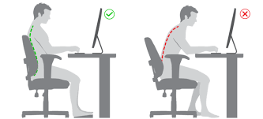

Cuidados personales
Higiene personal
La higiene personal es muy importante, ya que sirve para muchas cosas como evitar
enfermedades, entre otras cosas.
Para mantener una buena higiene podemos hacer muchas cosas:
- Ducharse y lavarse las manos e hidratarse la piel usando cremas.
- Usar productos adecuados a tu necesidad dermatológica.
- Lavarse los dientes, usar hilo dental y enjuage bucal.
- Lavarse el pelo y peinarlo ayuda a prevenir daños y enredos.
- Usar desinfectante al limpiar, incluso al lavar la ropa.
- Limpiar debajo de las uñas y cortarlas de vez en cuando.


El lavado de manos
El lavado de manos es muy útil para nuestra salud y bienestar,
aquí tienes algunas cosas por lo que es importante lavarse las manos:
- Prevenir enfermedades y su propagación, ya que reduce la propagación de bacterias
malignas.
- Es de las cosas más baratas y simples para reducir la propagación de enfermedades.
- Fomentarlo sirve para que niños y adultos creen conciencia para que no propagen tantas
enfermedades.
- Es recomendable lavarlas al menos 20 segundos con agua y jabón, y secarlas con una
toalla o con un secador de manos.
- Si no hay agua, se debe usar un desinfectante que supere el 60% de alcohol, aunque no
es tan efectivo como el agua y el jabón.


Riesgos laborales
Los riesgos laborales en el puesto de trabajo como administrativo principalmente son:
- Riesgos ergonómicos: Al pasar tantas horas sentados delante del ordenador, pueden
surgir problemas como dolor de espalda, cuello o muñeca, y trastornos musculoesqueléticos.
Esto se puede solucionar con el uso de escritorios ergonómigos, entre otras cosas.
- Riesgos relacionados con la visión: El hecho de pasar tantas horas delante de la
pantalla puede producir fatiga visual, visión borrosa, sequedad ocular e incluso dolores de
cabeza derivado de ello. Esto se puede solucionar mediante el uso de descansos visuales de la
pantalla y una iluminación adecuada.
- Riesgos psicosociales: Estos no se notan tanto, estos factores a los que se suelen
enfrentar son estrés por los plazos ajus tados, volumen de trabajo elevado, falta de apoyo
y la demanda de los proyectos por parte de los clientes. Esto afecta a la salud mental y emocional
de los trabajadores dando lugar a estrés, ansiedad y fatiga.
- Riesgos por accidentes: Aunque son menos comunes, también se pueden dar casos de
resbalones, tropiezos o caídas al desplazarse por la oficina, manipular cosas de la oficina o
almacenar y recuperar archivos o cosas.

Todo esto te ayudará a ti y a todo el que te rodea.